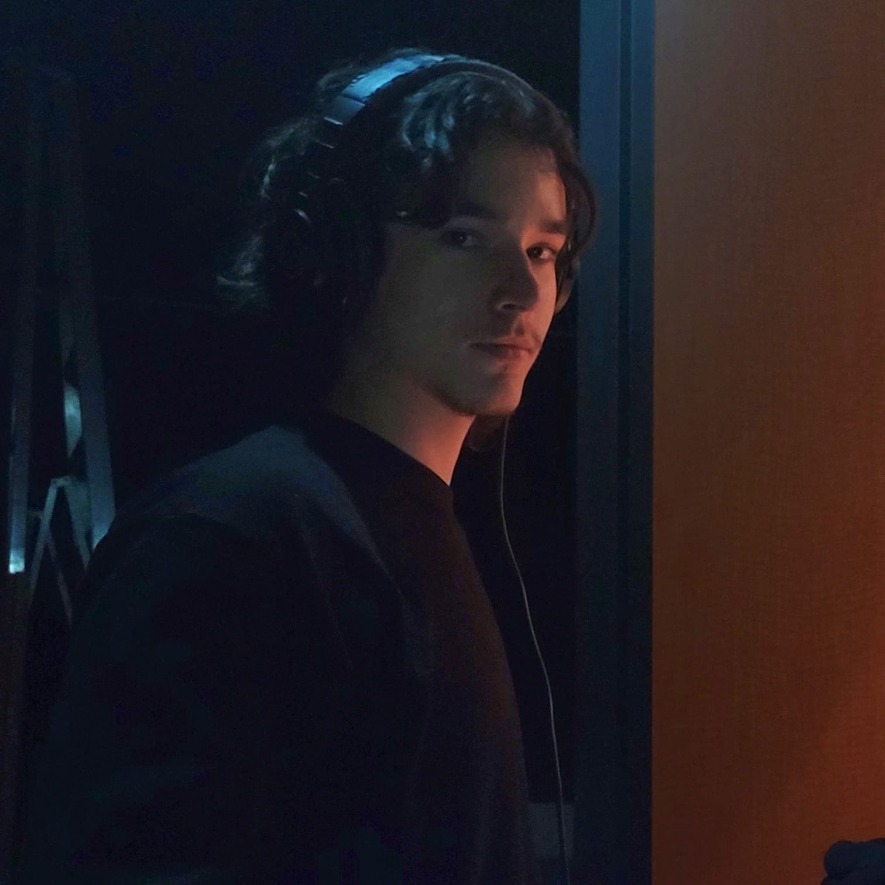
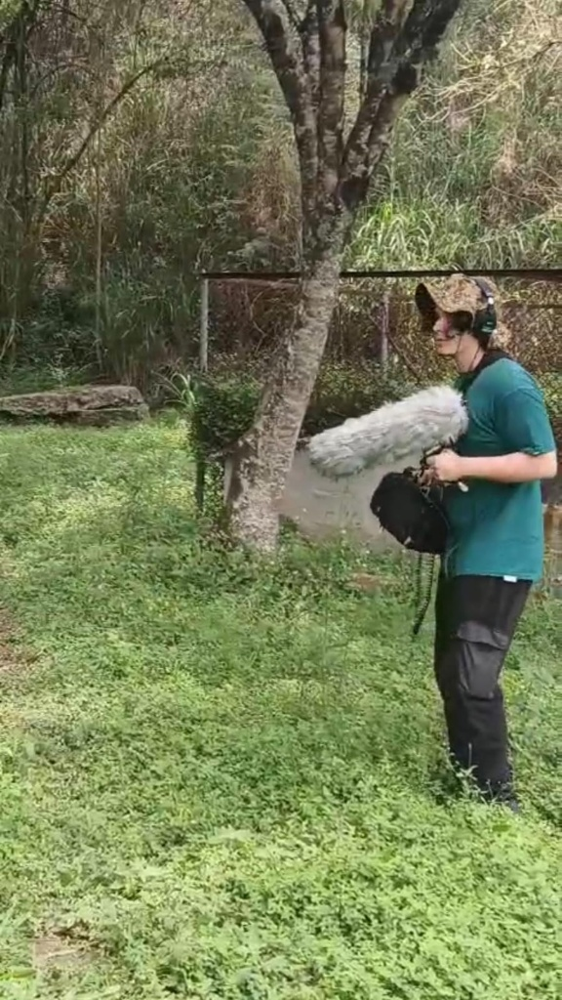
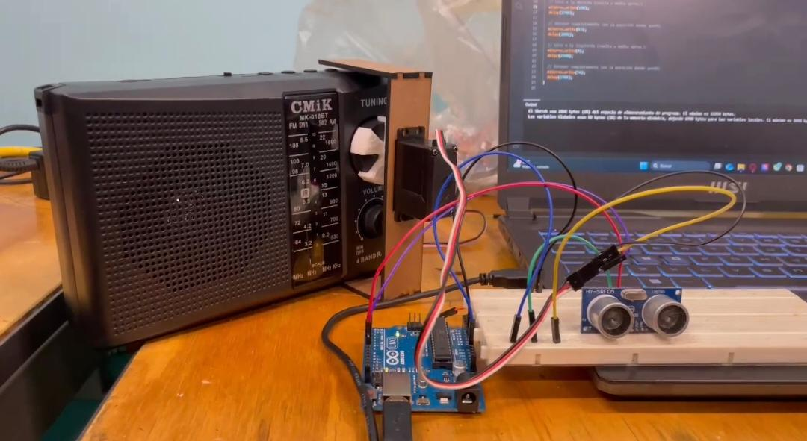
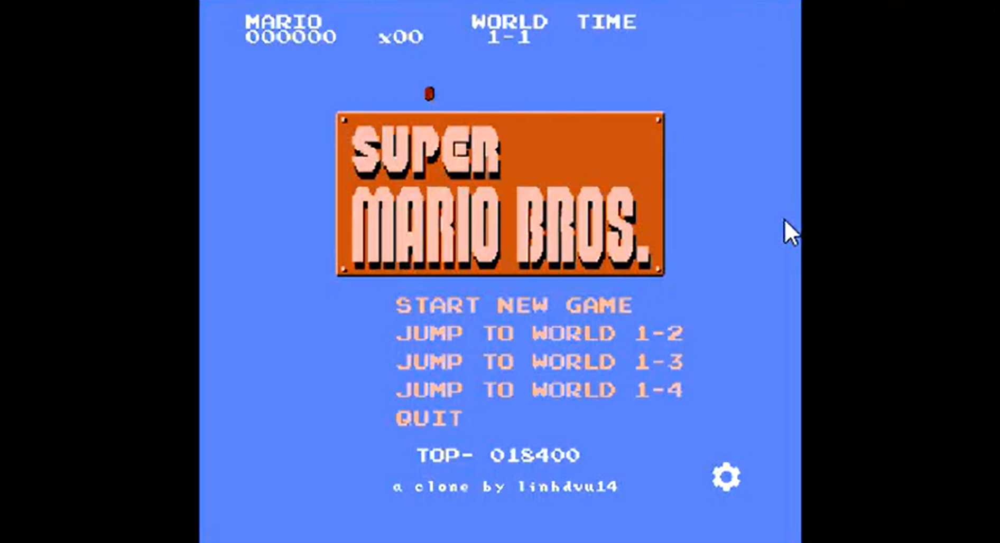
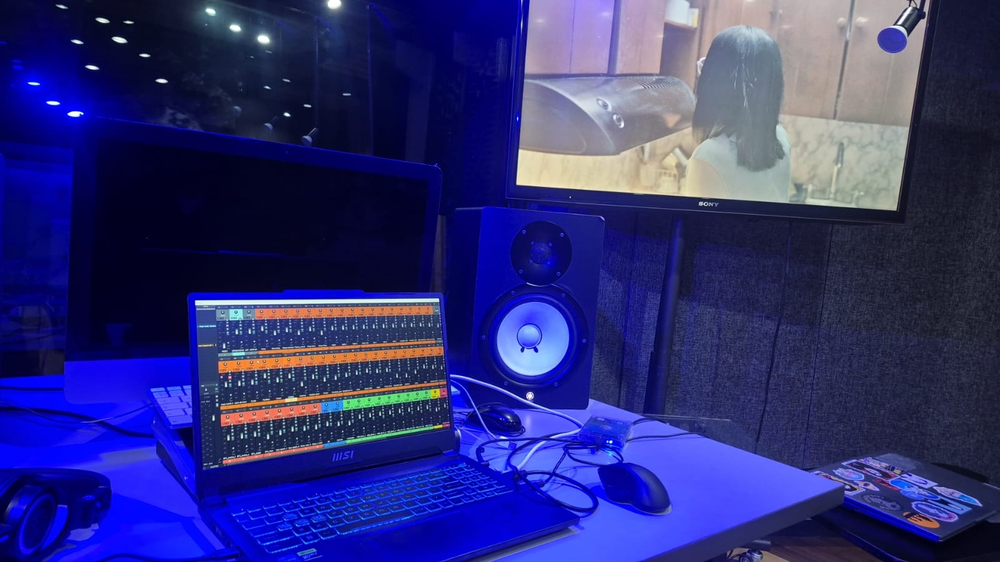
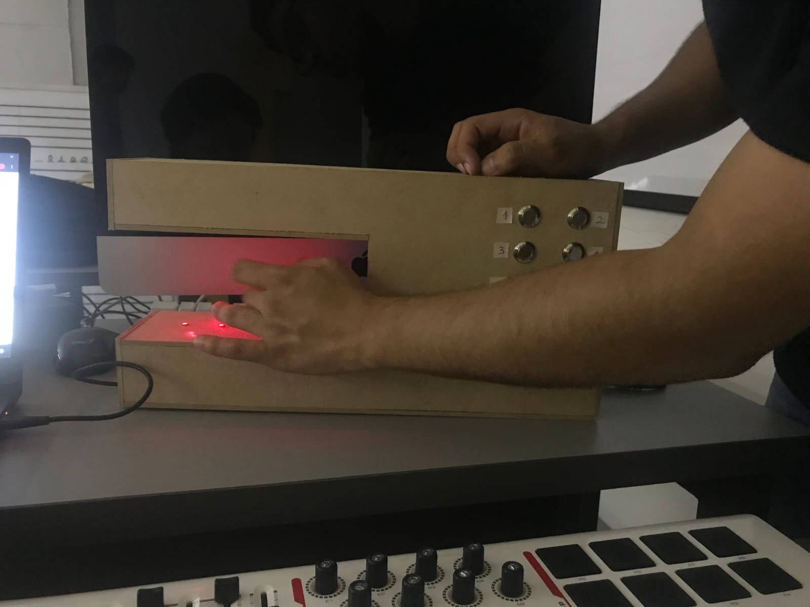
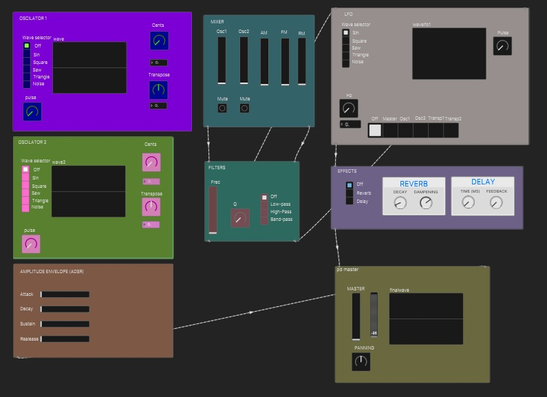
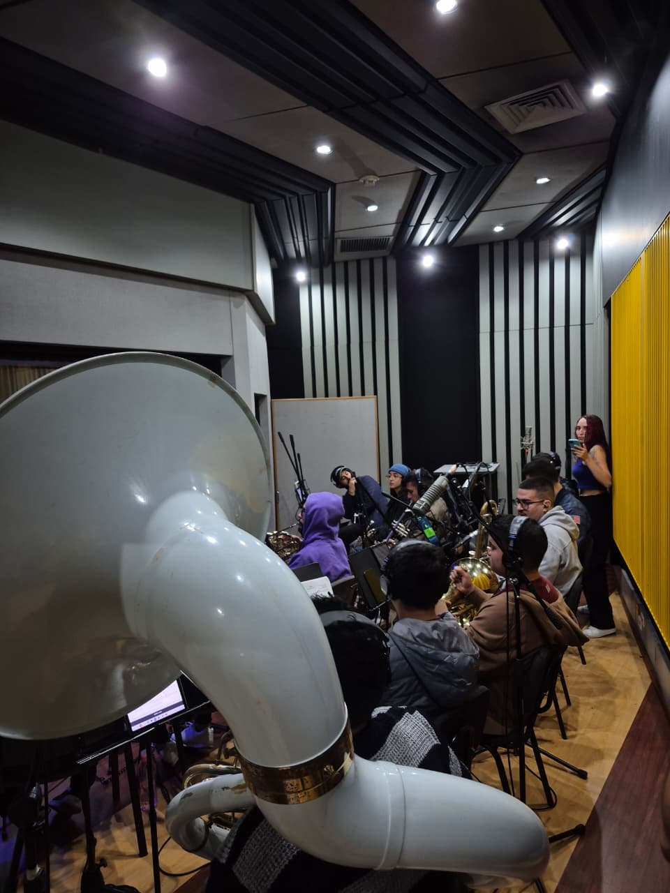
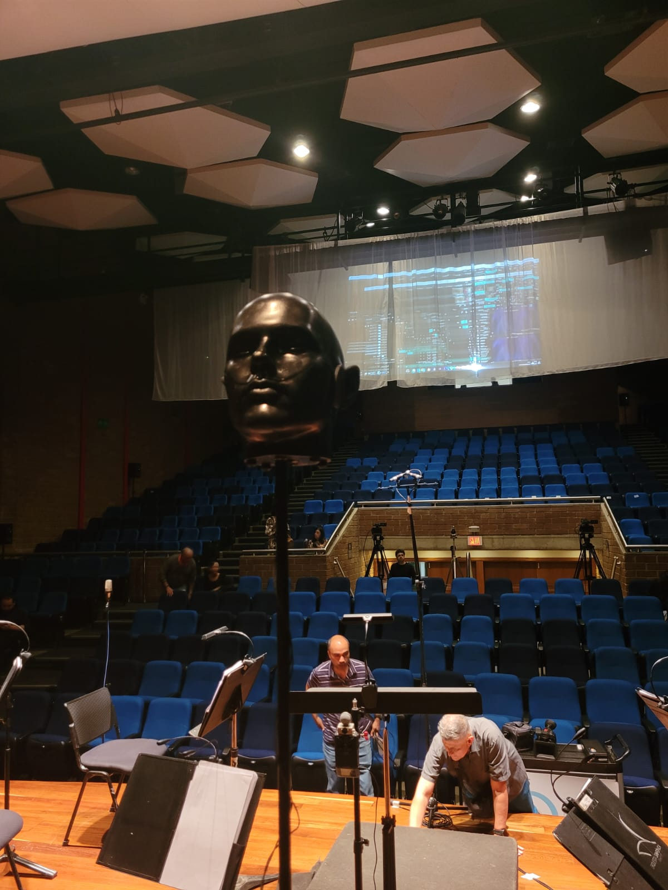
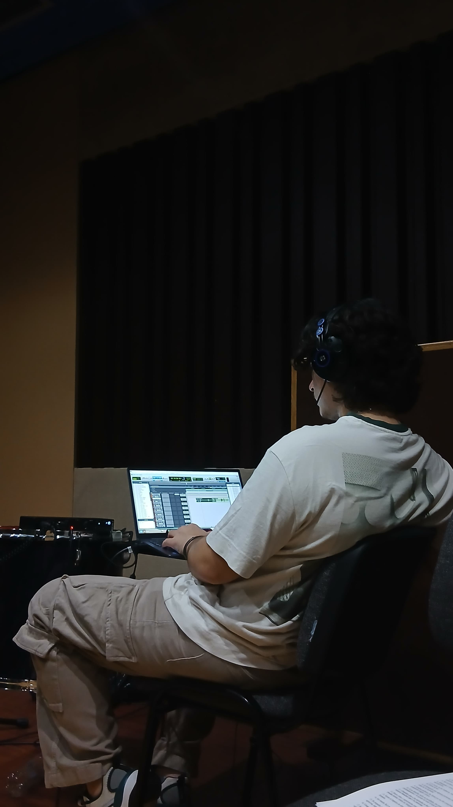

Creando experiencias sonoras inmersivas para videojuegos, cine y medios interactivos. Especializado en diseño sonoro, audio espacial y postproducción.

Estudiante de Ingeniería de Sonido con sólida formación técnica en postproducción de audio para medios audiovisuales e industria musical. Domino herramientas profesionales como Pro Tools, Reaper, REW y programación en Pure Data, con conocimientos avanzados en manejo de equipos de grabación, en edición, mezcla y diseño sonoro.
Especializado en crear paisajes sonoros que potencien la narrativa audiovisual, con especial enfoque en la atención al detalle y la coherencia estética de cada proyecto. Hago parte de dos semilleros de investigación en entornos sonoros inmersivos y en producciones de audio binaural.
Me caracterizo por trabajar en conjunto y busco activamente integrarme a un equipo donde pueda aportar mi capacidad creativa, gestión eficiente del tiempo y compromiso genuino con la excelencia, mientras continúo desarrollándome profesionalmente.

Grabación en campo, operador de boom, edición y postproducción de sonido para un corto-documental

Instalación de Radioarte Interactiva

Re-Design de todos los sonidos del nivel 1-2 de Mario en Unity

Diseño sonoro, editor de sonido, grabación y artista Foley

Creación, programación y construcción de una Arpa Láser polifónica

Desarrollo de sintetizador virtual en PlugData

Grabación de ensambles vocales, vientos, percusiones y batería

Grabación en vivo en formato binaural y estéreo para banda sinfónica de Eafit
Proyecto en progreso y creación, líder editor e implementador de audio en FMOD y Unity

Estoy siempre abierto a nuevos proyectos y colaboraciones interesantes...